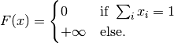

IndicatorSumConstraint¶
-
class
odl.solvers.functional.default_functionals.IndicatorSumConstraint(space, sum_value=1, sum_rtol=None)[source]¶ Bases:
odl.solvers.functional.functional.FunctionalIndicator functional of a unit sum constraint.
Notes
The functional
 is given by:
is given by:
Attributes: adjointAdjoint of this operator (abstract).
convex_conjThe convex conjugate.
domainSet of objects on which this operator can be evaluated.
grad_lipschitzLipschitz constant for the gradient of the functional.
gradientGradient operator of the functional.
inverseReturn the operator inverse.
is_functionalTrueif this operator’s range is aField.is_linearTrueif this operator is linear.proximalReturn the
proximal factoryof the functional.rangeSet in which the result of an evaluation of this operator lies.
Methods
_call(x)Return self(x).bregman(point, subgrad)Return the Bregman distance functional. derivative(point)Return the derivative operator in the given point. norm([estimate])Return the operator norm of this operator. translated(shift)Return a translation of the functional. -
__init__(space, sum_value=1, sum_rtol=None)[source]¶ Initialize a new instance.
Parameters: - space :
DiscreteLporTensorSpace Domain of the functional.
- sum_value : float
Desired value of the sum constraint.
- sum_rtol : float, optional
Relative tolerance for sum comparison. If set to None, the default is
space.sizetimes1e-10whenspace.dtypeisfloat64and1e-6otherwise.
Examples
Example where a point does not have unit sum …
>>> space = odl.rn(3) >>> ind_sum = IndicatorSumConstraint(space) >>> x = space.one() >>> ind_sum(x) inf
… and one where it does.
>>> x /= x.ufuncs.sum() >>> ind_sum(x) 0
- space :